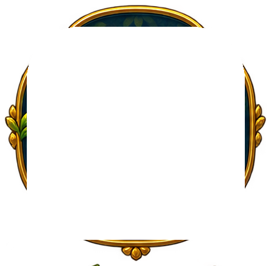
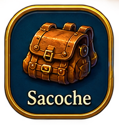
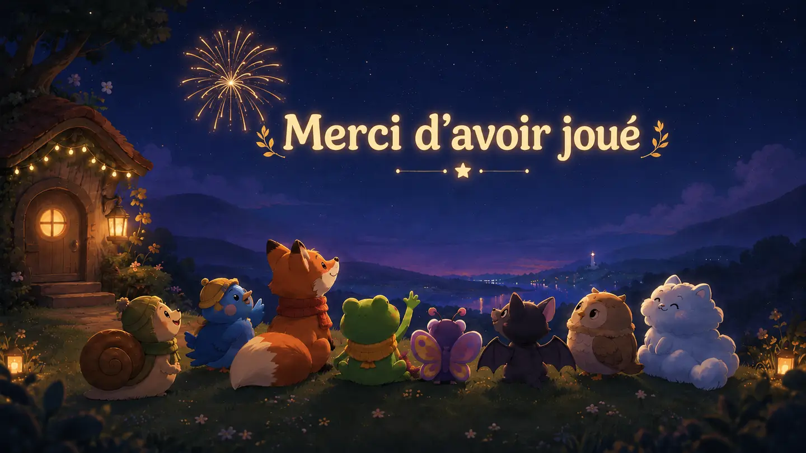

Bonsoir, voyageur
Ton petit refuge
continue de grandir.
Les lucioles ont veillé pendant ton absence.
Aujourd’hui
Deux aventures, aucun sacrifice rituel
Options
Chaque partie possède sa propre progression. Changer de partie n’efface ni ne remplace l’autre sauvegarde.
Choisis un chemin
Les environs
Chaque balade peut évoluer jusqu’au niveau 4. Les chemins lointains sont plus vastes et plus riches

0%
0 / 18Un feu, quelques amis
Le refuge
Exploration, récolte ou vie du camp : chaque amélioration change un petit morceau de tes balades.
Après le Grand Fanal
Le Troc
Compose un paquet avec tes surplus, puis choisis une seule ressource à recevoir. Les ressources régionales restent dans leur propre circuit.
Une lumière répond
Les Échos
Appelle des compagnons, assemble leurs fragments et prépare ceux qui t’accompagneront pendant les balades.
Pour plus tard
Boutique de Gemmes
Les achats payants auront leur propre espace, séparé des appels de la Lanterne.
Tout ce qui mérite un dessin
Le carnet
Ressources, rencontres, régions et petites victoires.

Huit chemins. Huit voix. Une lumière.